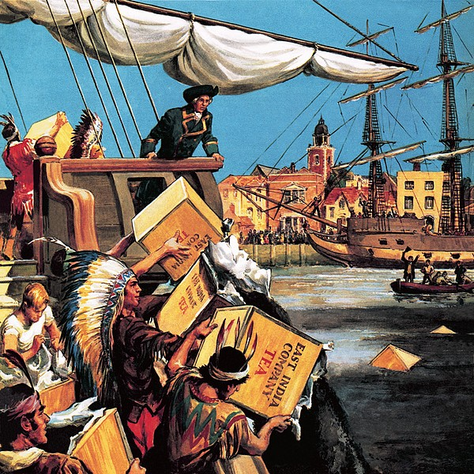
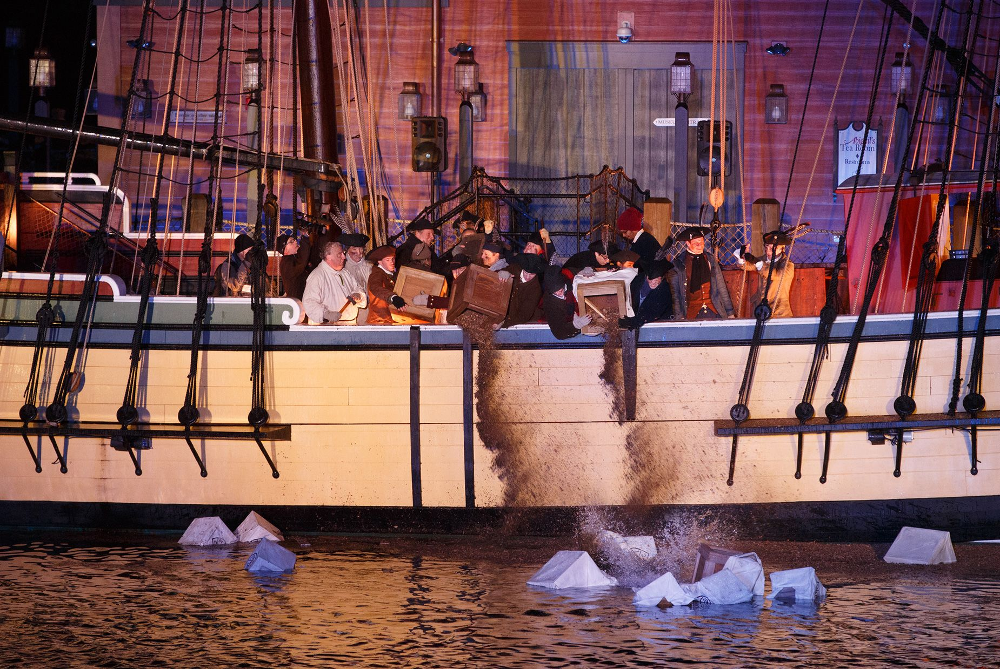
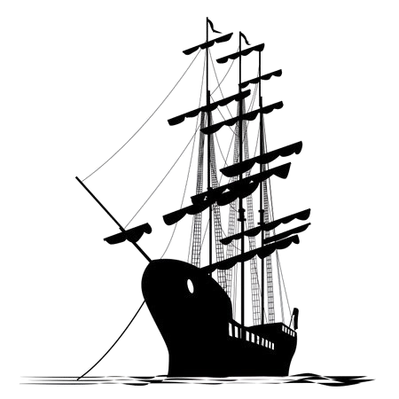

In a bold act of defiance against British taxation, a large assembly of Boston citizens went to the harbor last night, resulting in what is now being referred to as the Boston Tea Party. This event unfolded as a response to the Tea Act, which many colonists saw as harming local merchants by letting the British East India Company sell tea directly in the colonies without paying taxes.
On the evening of December 16th, hundreds of people gathered at the Old South Meeting House. The assembly was called to discuss the ongoing crisis surrounding the tea shipments that have been arriving in Boston. Frustration grew as it became clear that local tea merchants refused to return the tea to England, despite strong opposition to the taxes from the British government.
As the meeting progressed, a group of men, disguised as Native Americans, went to the ships in the Boston Harbor. In an act of rebellion, they got onto the ships and began throwing the chests of tea overboard. Some witnesses report that around 350 chests were dumped into the waters, a significant loss for the East India Company and a powerful act against Britain.
It is belived that tea worth around £18,000 was thrown into the river.
The response from the rest of the citizens has been very supportive. Many residents expressed their approval of the actions taken, viewing them as a necessary step in the fight for their rights. Local merchants, who have been struggling under the weight of British taxation, are particularly pleased with the outcome.
The Boston Tea Party has started many discussions throughout the colonies, with many expecting that this act of rebellion will lead to further levels of tensions between the colonies and Britain.
As news of the event spreads, it will bring more support against British taxes and control. This is an important moment in the fight for American independence, and its effects will be felt in the colonies for many more years.
The events of yesterday will be remembered in the colonies for years, strengthening the push for independence and self-governance. The Boston Tea Party has set an important example, and its effects will be seen as the colonies continue to fight against Britain.


Most of the colonists view the Boston Tea Party as a bold act of defiance against the British. They belived that taxation without representation was unfair.
Certain merchants support the event, as they feel it will protect some businesses from unfair competition with the British East India Company.
Some groups, like the Sons of Liberty, are strongly supporting the protest. They are seeing it as an action that would inspire further resistance against Britain.
However, some colonists that support the British, known as the Loyalists, are disapproving the act at the Boston Tea Party. One Loyalist named John said, "We support the British! The least the colonists can do in return is to pay the British taxes!"
Some colonists feel that while the Tea Act is unfair, the destruction of property is not an appropriate response. Some state that "Peaceful negotiations with Britain would have been more practical." The colonists also get revenge on some of the British tax collectors by "Tarring and Feathering". The colonists poured tea forcibly into the mouths of the tax collectors. Of course, this will hurt and will lead to long-term damage. This act is to humiliate the British officials, as shown on the right.
Many citizens are concerned about the possible consequences of the protests. One innocent citizen, Bobby said, "I'm worried. What will Britain think of this act? Will they increase the taxes?"
Some people are staying neutral, either not caring about the event or unsure of its consequences.
Overall, the Boston Tea Party shows some disagreements among colonists about their relationship with Britain and how to protest.

France and Spain focus on the American colonies. They have watched how the colonists settled in the New World, and how they adjusted to the war. They are rivals of Britain. France and Spain are still currently watching how the colonists responded to Britain's various taxes.
Both nations are probably strategizing on how to turn the situation to their advantage. By providing hidden support or assistance to the colonies, they can enhance their position in the event of a larger conflict.
France and Spain are eager to see how Britain will react to these colonial protests. This is because this incident could affect their own plans.
In conclusion, the situation in the American colonies interests France and Spain. This is because it can help them with their many plans.